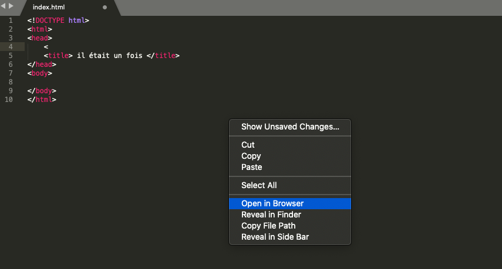

Avant d'ouvrir votre site, après une modification sur votre page html enregistrer le (ctrl+S sous Windows. Sous MacOs cmd+S.). Si vous n'enregitrez pas après une modification, vous verrez pas la modification quand vous allez ouvrir votre site.
Pour ouvrir votre site, faites clic droit sur votre page de code html, puis open in Browser.
